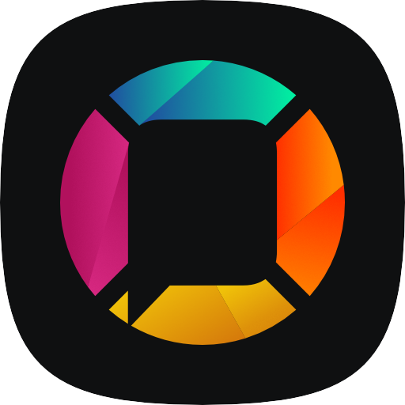

Plataformas
Totalmente livres e de código aberto.

Mozilla
Firefox é um navegador livre e multiplataforma desenvolvido pela Mozilla Foundation com ajuda de centenas de colaboradores. A intenção da fundação é desenvolver um navegador leve, seguro, intuitivo e altamente extensível. Saiba Mais
